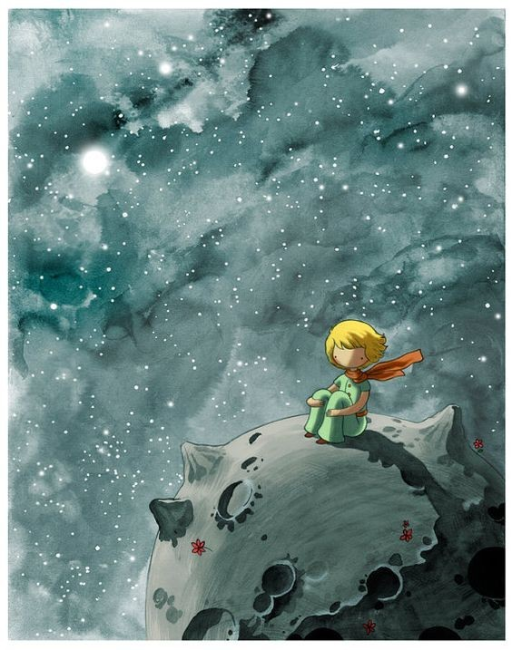

“가장 중요한 것은 눈에 보이지 않아.”
출간일
1943년
비행기 사고로 사막에 불시착한 조종사가 작은 별에서 온 어린 왕자를 만나는 부분에서 인생에서 정말 의도하지 못 했던 순간에서 큰 사건이 벌어지는거 같다.
어린왕자가 어른들의 행동들을 관찰하면서 너무 자기들만의 세계에 갇혀 있는 모습이었다는 말에서 혹시 나도 주체적으로 살기 보단 너무 특정가치만 강조해서 살아가고있나라는 성찰을 하게 되었다
AI의 감상평
《어린 왕자》는 단순한 동화 같지만, 삶과 사랑에 대한 깊은 철학적 메시지를 담고 있어 많은 사람들에게 감동을 준다.
어린이와 어른 모두에게 의미 있는 책으로 평가받으며, 시대를 초월해 전 세계에서 사랑받고 있다.
다만, 결말이 다소 모호하고 어른들의 모습을 부정적으로 묘사했다는 해석도 있지만, 전체적으로 "어른이 된 후 다시 읽어야 진짜 의미를 알 수 있는 책"이라는 평가가 많다.